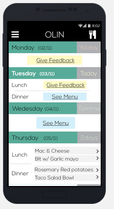
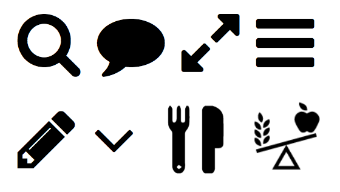

THE CURRENT DESIGN
The current digital prototype is very similar to paper prototype 1.3 (see Design Development). Much of the feedback we received from user interviews and interactions prior to our Heuristic Evaluation we implemented in prototype 1.3, and these design changes carried over to our initial digital prototype.
This current mobile app design focuses primarily on choosing the meals available in the dining hall beforehand, with additional functionality in menu display and navigation, and feedback for past meals. It works by initially setting up a user profile that contains users’ preferred dining halls and food restrictions. After this initial flow the user can navigate through the menu, feedback, and choosing menu screens.
A few major changes in the system model are underway due to feedback from the heuristic evaluation, some of which are outlined below. These changes have yet to be implemented, but will be incorporated into the next iteration of the interface design.

WHAT HAS CHANGED?
Tradeoffs To Bring Design Online To bring our prototype online, we decided to leave out some of our intended functionality. We made the initial prototype with a series of images, with hotspot hyperlinks on the images to tie together multiple images. While this process was quick, it was not feasible to create all the possible screens. For this reason, we decided to leave out functionality like viewing the menu over multiple days, voting on dishes over multiple days, or quick accessing the menu. Another limitation of our prototype was that you could not interact with it completely like a traditional app. Gestures like swipe were impossible to implement, and were replaced by click functions. Further, functions like menu search would have been too time consuming to implement.
Response to Heuristic Evaluation While our heuristic evaluation gave us many problems to fix, there were two issues that came up that required big changes to our overall app design.
The first issue lead to a major redesign in the user's conceptual model and the design model of the app. During the heuristic evaulation, we found that the evaluating team didn't have a good understanding of how our app worked on first use, and that much of the navigation was unclear. Many of the specifics on voting for dishes were not being conveyed in an effective matter from the interface to the user. To fix this problem, we decided to overhaul the conceptual model of the design. In the diagram on the left, you can see the before and after our our redesign. In our initial design, we immediately put the user into the choosing page, which doubled as the home page. In our new design, we have split the home page from the choosing page, which gives us more room to explain how the app works, and simplifies the navigation scheme by bringing all features to the same level. We hope that this redesign of the system model will help first time users easily understand how the app works, while keeping the overall app easy to quick to navigate.
The other big change we will be making in our design involves the feedback feature. Currently, we allow the user to give feedback on a specific dish, by finding the dish they ate, and then giving writing feedback on said dish. We also provide the user a place to enter in general comments that doesn't necessarily fit in any category. Based on feedback from the heuristic evaluation, we are completely redesigning the feedback page to allow the user to simply give feedback on a general form that allows you to optionally enter in the dish that you are giving feedback on. Since the feedback is being read by a human being, we don't need to filter the feedback by the dish. This will make the feedback feature significantly simpler, and removes unnessary information from the feedback screen.

KEY INSIGHTS
A theme we have returned to again and again is that any interface that we build and understand is likely not going to as intuitive and understandable to others. We saw evidence of this again in our heuristic evaluation, when we received feedback that some aspects our application were difficult to understand and their purposes unclear.
In particular, we found that icons were a source of confusion throughout our app.. While icons provide a convienient way to save space in our tightly constrained app, while retaining the same information as a button with words, they created confusion when they didn't follow a clear standard. The figure shows all the icons we used in our app. While some of the icons were very clear, and made sense, others only made sense after you had used them once. For example, the fork and knife icon clearly did something related to food, but since the entire app is food related, it was not clear what purpose it served. The user had to click on the icon in order to understand what it did. One possible solution to this problem is to incorporate a tutorial screen at first time use, that can quickly introduce the users to the icon vocabulary used within the app.
Another major problem within our app was understanding how the menu choosing feature worked. While for us, as the designers, this feature made perfect sense, we found that our heuristic evaluators could not undertand the purpose without further explanation. The insight that we might need to include much more direction within the app has led to major changes within the app.
QUESTIONS AND SHORTCOMINGS
We are investigating moving our prototype onto html/css/js. The InvisionApp has limitations such as not saving data on user-inputted preferences and logins. This would hopefully decrease the number of changes we need to make from screen to screen in our prototype. We will also need to investigate how to make an effective tutorial for first time users to guide them and clear up any potential misunderstandings when using the application about what things do what.